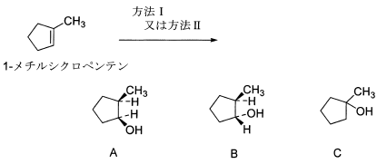

令和3年度 問2 有機化学及び燃料
1-メチルシクロペンテンから方法Ⅰ又は方法Ⅱによりメチルシクロペンタノールを合成したとき、それぞれの方法から主生成物として得られる化合物として、最も適切なものはどれか。
方法Ⅰ）酸触媒水和反応
方法Ⅱ）ヒドロホウ素化と塩基性過酸化水素水による酸化

| 選択肢 | 方法Ⅰ | 方法Ⅱ | |
|---|---|---|---|
|
①
|
A | B | |
|
②
|
A | C | |
|
③
|
C | B | |
|
④
|
B | C | |
|
⑤
|
C | A | |
反応がマルコフニコフ付加であるかを判断する問題です。マルコフニコフ付加は第3級＞2級＞1級炭素の順に反応が起こりやすいことを意味します。つまり原料である1-メチルシクロペンテンのメチル基が結合した炭素にOHが結合しやすい反応です。第1級＞2級＞3級炭素の順に反応が起こりやすい場合はアンチマルコフニコフ付加と呼ばれます。
方法１）酸触媒水和：マルコフニコフ付加
方法２）ヒドロホウ素化：アンチマルコフニコフ付加
酸触媒水和反応は、プロトン付加に伴うカルボカチオンがマルコフニコフ則に従う典型的な反応です。
ヒドロホウ素化では水素－ホウ素結合を有するボランを反応させます。二重結合を形成する2つの炭素にH-BH2の形で同時に付加する遷移状態を経るため、シクロペンタン平面に対してメチル基とは反対方向から付加します。その時、アルコールの前駆体であるBH2側は立体障害の少ない1級炭素側へ付加します。よってCが得られます。
関連する反応としてオキシ水銀化があります。マルコフニコフ付加です。
オキシ水銀化は水銀塩を水存在下で反応させ、まず二重結合の2つの炭素を使用してHg+-C-Cの三員環であるマーキュリウムイオンを形成します。その後、水がマーキュリウムイオンの炭素部分に攻撃することでメチルシクロペンテン環に-OHと-Hg-O2CCH3が結合した化合物が得られます。この時、立体障害の関係からメチル基が結合した炭素に-OHが、その隣の炭素に-Hg-O2CCH3が付加します。最後にNaBH4のような還元剤を用いて脱水銀化することで-Hg-O2CCH3の部分が-Hに変化します。結果としてメチル基が結合した炭素に-OHが結合した1,1-ヒドロキシメチルシクロペンタンが得られます。マルコフニコフ付加であるためAが得られます。